hvPlot#
A familiar and high-level API for data exploration and visualization
{kind=link}
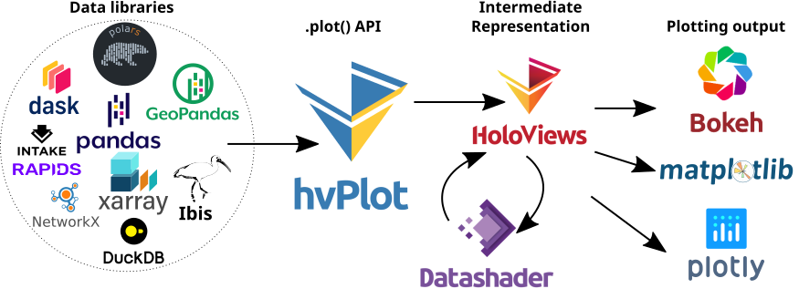
.hvplot() is a powerful and interactive Pandas-like .plot() API
By replacing .plot() with .hvplot() you get an interactive figure. Try it out below!
import hvplot.pandas
from bokeh.sampledata.penguins import data as df
df.hvplot.scatter(x='bill_length_mm', y='bill_depth_mm', by='species')
.hvplot() can generate plots from Pandas DataFrames and many other data structures of the PyData ecosystem:
import hvplot.xarray
import xarray as xr
xr_ds = xr.tutorial.open_dataset('air_temperature').load().sel(time='2013-06-01 12:00')
xr_ds.hvplot()
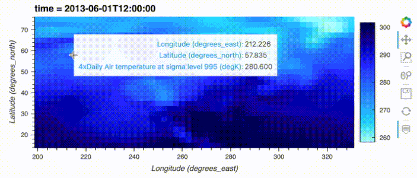
import hvplot.pandas
from bokeh.sampledata.autompg import autompg_clean as df
table = df.groupby(['origin', 'mfr'])['mpg'].mean().sort_values().tail(5)
table.hvplot.barh('mfr', 'mpg', by='origin', stacked=True)
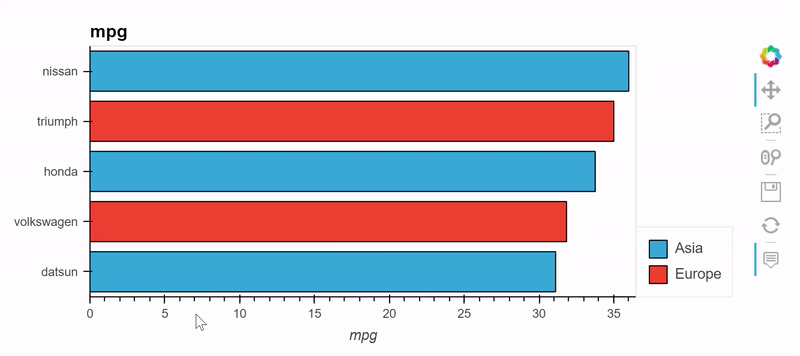
import dask
import hvplot.dask
df_dask = dask.dataframe.from_pandas(df, npartitions=2)
df_dask.hvplot.scatter(x='bill_length_mm', y='bill_depth_mm', by='species')
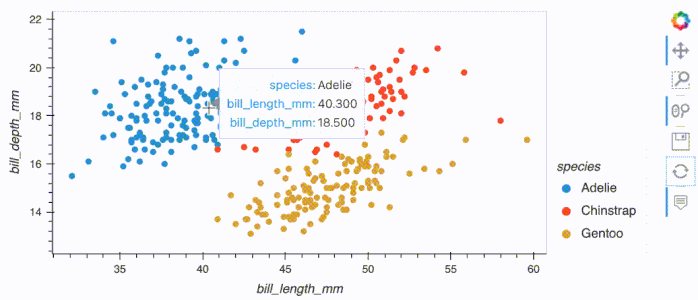
import geopandas as gpd, geodatasets
import hvplot.pandas
chicago = gpd.read_file(geodatasets.get_path("geoda.chicago_commpop"))
chicago.hvplot.polygons(geo=True, c='POP2010', hover_cols='all')
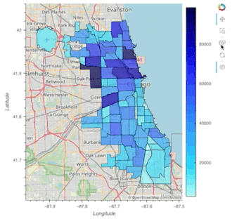
import polars
import hvplot.polars
df_polars = polars.from_pandas(df)
df_polars.hvplot.scatter(x='bill_length_mm', y='bill_depth_mm', by='species')
import duckdb
import hvplot.duckdb
from bokeh.sampledata.autompg import autompg_clean as df
df_duckdb = duckdb.from_df(df)
table = df_duckdb.groupby(['origin', 'mfr'])['mpg'].mean().sort_values().tail(5)
table.hvplot.barh('mfr', 'mpg', by='origin', stacked=True)
import hvplot.intake
from hvplot.sample_data import catalogue as cat
cat.us_crime.hvplot.line(x='Year', y='Violent Crime rate')
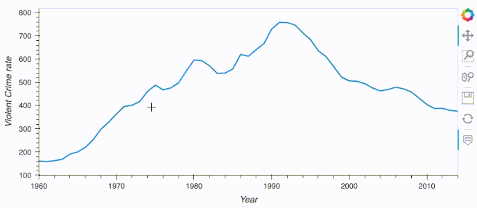
import hvplot.networkx as hvnx
import networkx as nx
G = nx.petersen_graph()
hvnx.draw(G, with_labels=True)
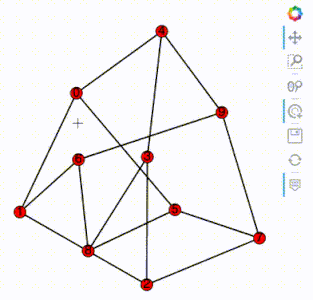
import hvplot.streamz
from streamz.dataframe import Random
df_streamz = Random(interval='200ms', freq='50ms')
df_streamz.hvplot()
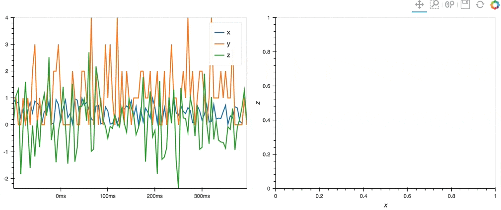
.hvplot() can generate plots with Bokeh (default), Matplotlib or Plotly.
import hvplot.pandas
from bokeh.sampledata.penguins import data as df
df.hvplot.scatter(x='bill_length_mm', y='bill_depth_mm', by='species')
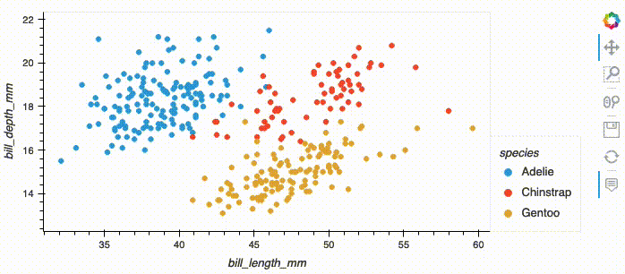
import hvplot.pandas
from bokeh.sampledata.penguins import data as df
hvplot.extension('matplotlib')
df.hvplot.scatter(x='bill_length_mm', y='bill_depth_mm', by='species')
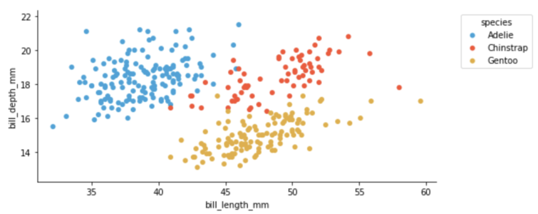
import hvplot.pandas
from bokeh.sampledata.penguins import data as df
hvplot.extension('plotly')
df.hvplot.scatter(x='bill_length_mm', y='bill_depth_mm', by='species')
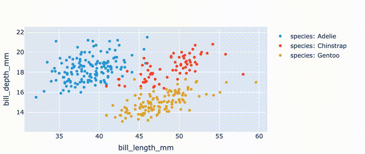
.hvplot() sources its power in the HoloViz ecosystem. With HoloViews you get the ability to easily layout and overlay plots, with Panel you can get more interactive control of your plots with widgets, with DataShader you can visualize and interactively explore very large data, and with GeoViews you can create geographic plots.
import hvplot.pandas
from hvplot.sample_data import us_crime as df
plot1 = df.hvplot(x='Year', y='Violent Crime rate', width=400)
plot2 = df.hvplot(x='Year', y='Burglary rate', width=400)
plot1 + plot2
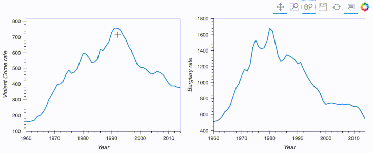
import hvplot.pandas
import pandas
from bokeh.sampledata.penguins import data
df = data.groupby('species')['bill_length_mm'].describe().sort_values('mean')
df.hvplot.scatter(y='mean') * dff.hvplot.errorbars(y='mean', yerr1='std')
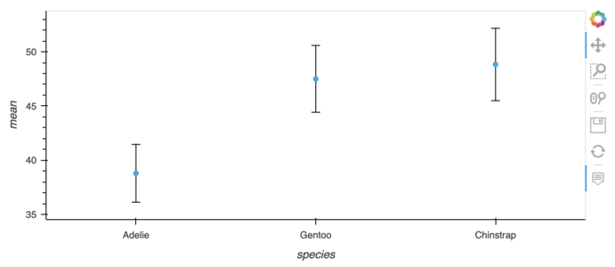
import hvplot.pandas
from bokeh.sampledata.penguins import data as df
df.hvplot.scatter(x='bill_length_mm', y='bill_depth_mm', groupby='island', widget_location='top')
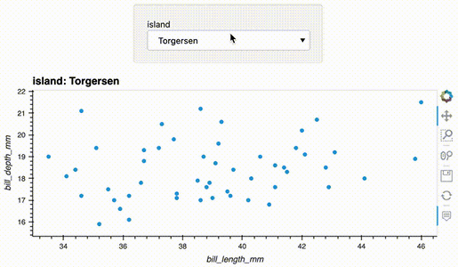
import hvplot.pandas
from hvplot.sample_data import catalogue as cat
df = cat.airline_flights.read()
df.hvplot.scatter(x='distance', y='airtime', rasterize=True, cnorm='eq_hist', width=500)
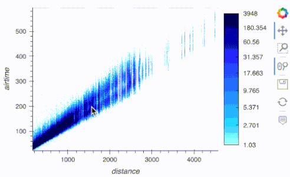
import hvplot.xarray
import xarray as xr, cartopy.crs as crs
air_ds = xr.tutorial.open_dataset('air_temperature').load()
air_ds.air.sel(time='2013-06-01 12:00').hvplot.quadmesh(
'lon', 'lat', projection=crs.Orthographic(-90, 30), project=True,
global_extent=True, cmap='viridis', coastline=True
)
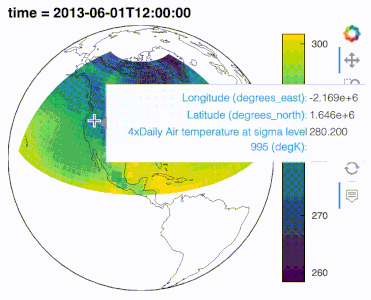
.interactive() to turn data pipelines into widget-based interactive applications
By starting a data pipeline with .interactive() you can then inject widgets into an extract and transform data pipeline. The pipeline output dynamically updates with widget changes, making data exploration in Jupyter notebooks in particular a lot more efficient.
import hvplot.pandas
import panel as pn
from bokeh.sampledata.penguins import data as df
w_sex = pn.widgets.MultiSelect(name='Sex', value=['MALE'], options=['MALE', 'FEMALE'])
w_body_mass = pn.widgets.FloatSlider(name='Min body mass', start=2700, end=6300, step=50)
dfi = df.interactive(loc='left')
dfi.loc[(dfi['sex'].isin(w_sex)) & (dfi['body_mass_g'] > w_body_mass)]['bill_length_mm'].describe()
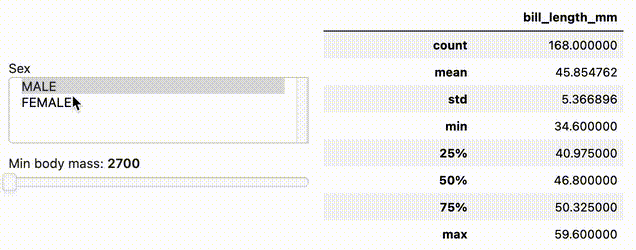
import hvplot.xarray
import panel as pn
import xarray as xr
w_time = pn.widgets.IntSlider(name='time', start=0, end=10)
da = xr.tutorial.open_dataset('air_temperature').air
da.interactive.isel(time=w_time).mean().item() - da.mean().item()
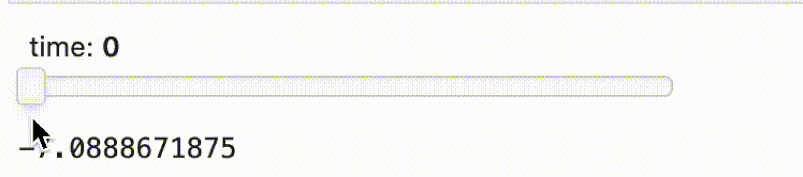
.interactive() supports displaying the pipeline output with .hvplot(). You can even output to any other output that Panel supports using .pipe(...).
import hvplot.xarray
import panel as pn
import xarray as xr
da = xr.tutorial.open_dataset('air_temperature').air
w_quantile = pn.widgets.FloatSlider(name='quantile', start=0, end=1)
w_time = pn.widgets.IntSlider(name='time', start=0, end=10)
da.interactive(loc='left') \
.isel(time=w_time) \
.quantile(q=w_quantile, dim='lon') \
.hvplot(ylabel='Air Temperature [K]', width=500)
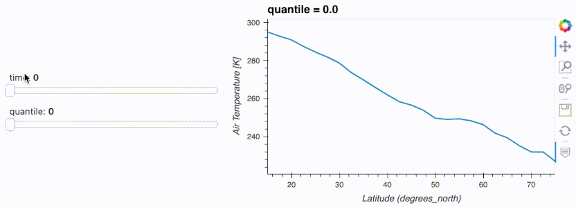
.hvplot.explorer() to explore data in a web application
The Explorer is a Panel web application that can be displayed in a Jupyter notebook and that can be used to quickly create customized plots.
import hvplot.pandas
from bokeh.sampledata.penguins import data as df
hvexplorer = df.hvplot.explorer()
hvexplorer
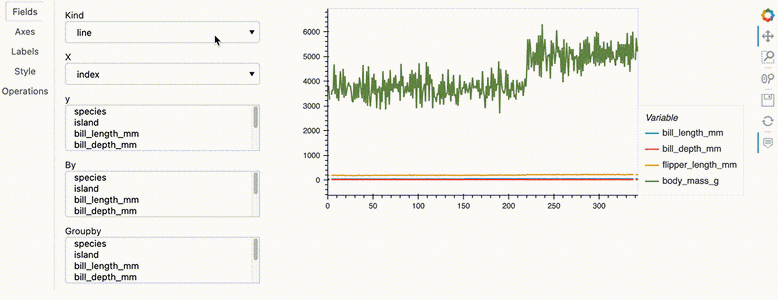